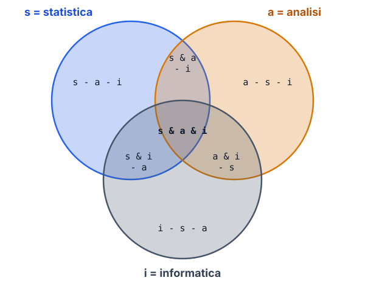

Prerequisiti: lezioni T11 (Liste e tuple), T12 (Dizionari e set) e T13 (Funzioni).
Oggi ci sono solo esercizi, in ordine di difficoltà, su liste, tuple, dizionari e set. Per ogni esercizio create un file .py con il nome indicato e scrivete il programma da soli. Le funzioni servono solo nella challenge. Si comincia con un riscaldamento di 10 passi brevi, tutti nello stesso file.
Ogni esercizio ha la consegna, un esempio di esecuzione e alcuni casi da provare: il programma è corretto quando dà gli stessi risultati. Sotto ogni consegna c'è anche «Da dove partire», lo scheletro del file: commenti e variabili, il resto lo scrivete voi. Alla fine c'è una challenge a scelta tra 5 temi, che chiude il laboratorio. Gli esercizi extra, in fondo, sono per casa: in laboratorio non si fanno e hanno la soluzione subito sotto la consegna. Il link «Soluzione →» di ogni esercizio porta al codice: apritelo dopo averci provato. Le soluzioni le vediamo all'inizio della lezione T14.
| # | File | Esercizio |
|---|---|---|
| Passi 1-10 | riscaldamento.py |
Riscaldamento: liste, tuple, dizionari e set |
| 1 | voti_appello.py |
L'appello di Statistica |
| 2 | sondaggio.py |
Come arrivate in aula |
| 3 | sessione.py |
La sessione invernale |
| Challenge | a scelta | Mercati e finanza · Sport · Imprese e marketing · Salute e scienza · Caso e probabilità |
| Extra 1 | coda_mensa.py |
La coda in mensa (a casa) |
| Extra 2 | tre_corsi.py |
Chi segue cosa (a casa) |
| Extra 3 | libretto.py |
Il libretto (a casa) |
| Extra 4 | contingenza.py |
Scuola di provenienza ed esito (a casa) |
| Extra 5 | descrittive.py |
Ore di studio (a casa) |
Gli strumenti che servono oggi. Da oggi si possono usare sum(), min(), max() e sorted(); l'unico import ammesso è from collections import Counter, defaultdict.
from collections import Counter, defaultdict
voti: list[int] = [int(v) for v in "28 18 30".split()]
print(sum(voti), min(voti), sorted(voti)) # 76 18 [18, 28, 30]
voti.append(24) # in fondo; voti.pop(0) toglie il primo
cfu: dict[str, int] = {"Analisi": 9, "Informatica": 6}
for esame, n in cfu.items(): # coppie (chiave, valore)
print(esame, n) # Analisi 9, poi Informatica 6
print(cfu.get("Inglese", 0)) # 0: la chiave non c'è
a: set[str] = {"Anna", "Bruno"}
b: set[str] = {"Bruno", "Carla"}
print(sorted(a | b), a & b, a - b) # ['Anna', ...] {'Bruno'} {'Anna'}
print(Counter("abbccc").most_common(1)) # [('c', 3)]
gruppi: defaultdict[str, list[int]] = defaultdict(list)
gruppi["Analisi"].append(27) # la lista vuota si crea da solariscaldamento.py)Dieci passi brevi per provare una operazione alla volta su liste, tuple, dizionari e set.
corsi = ["Analisi", "Statistica", "Informatica", "Inglese"].[0]), l'ultimo ([-1]), quanti sono (len()) e i primi due con lo slicing [:2].Primo: Analisi
Ultimo: Inglese
Numero di corsi: 4
Primi due: ['Analisi', 'Statistica']corsi del passo 1.append("Economia"), insert(0, "Fisica"), remove("Inglese"). Dopo ognuno stampate la lista.pop(), salvatelo in tolto e stampate tolto e la lista.['Analisi', 'Statistica', 'Informatica', 'Inglese', 'Economia']
['Fisica', 'Analisi', 'Statistica', 'Informatica', 'Inglese', 'Economia']
['Fisica', 'Analisi', 'Statistica', 'Informatica', 'Economia']
Tolto: Economia, restano ['Fisica', 'Analisi', 'Statistica', 'Informatica']voti = [24, 18, 30, 18, 27].in controllate se ci sono un 30 e un 17; con count() contate i 18; con index() trovate la posizione del 30.30 c'è? True 17 c'è? False
Quanti 18: 2
Posizione del 30: 2
Somma 117, minimo 18, massimo 30
Media: 23.40voti del passo 3.sorted(voti) e poi voti: la lista di partenza non è cambiata. Stampate anche sorted(voti, reverse=True).voti.sort() e poi voti: sort() ordina la lista stessa e restituisce None.sorted: [18, 18, 24, 27, 30]
voti dopo sorted: [24, 18, 30, 18, 27]
dal più alto: [30, 27, 24, 18, 18]
risultato di sort: None
voti dopo sort: [18, 18, 24, 27, 30]voti = [24, 18, 30], poi altri = voti e altri.append(0). Stampate voti: è cambiata anche lei, perché i due nomi indicano la stessa lista.copia = voti.copy() e copia.append(99). Stampate voti e copia: la copia è una lista nuova e voti non cambia.voti: [24, 18, 30, 0]
voti: [24, 18, 30, 0] copia: [24, 18, 30, 0, 99]esame = ("Statistica", 6, 28). Spacchettatela in nome, cfu, voto e stampate la prima riga dell'output.esame[2] = 30, leggete l'errore e poi commentate la riga: una tupla non si può modificare.Statistica: 6 CFU, voto 28
Elementi: 3, primo: Statistica
TypeError: 'tuple' object does not support item assignmentcrediti = {"Analisi": 9, "Statistica": 6}."Informatica" con 9 CFU, portate "Statistica" a 9 e cancellate "Analisi" con del. Stampate il dizionario.in se c'è "Inglese" e leggetelo con get("Inglese", 0).crediti["Inglese"], leggete l'errore e poi commentate la riga.{'Statistica': 9, 'Informatica': 9}
Inglese c'è? False
CFU di Inglese: 0
KeyError: 'Inglese'crediti = {"Analisi": 9, "Statistica": 6, "Informatica": 9, "Inglese": 3}.items() stampate ogni esame con i suoi CFU, poi il totale con sum(crediti.values()).items() tenete gli esami da 9 CFU.Analisi: 9 CFU
Statistica: 6 CFU
Informatica: 9 CFU
Inglese: 3 CFU
Totale: 27 CFU
Esami da 9 CFU: ['Analisi', 'Informatica']a = {"Anna", "Bruno", "Carla"} e b = {"Bruno", "Davide"}.a.add("Anna") e stampate len(a): Anna c'era già, quindi gli elementi restano 3.|, intersezione &, differenza - e differenza simmetrica ^, sempre dentro sorted().presenze = ["Anna", "Bruno", "Anna", "Carla", "Bruno"] e set() contate le persone diverse.Elementi di a: 3
a | b: ['Anna', 'Bruno', 'Carla', 'Davide']
a & b: ['Bruno']
a - b: ['Anna', 'Carla']
a ^ b: ['Anna', 'Carla', 'Davide']
Presenze: 5, persone diverse: 3lettere = Counter("statistica") stampate quante t e quante z ci sono (una chiave assente vale 0) e le due lettere più frequenti con most_common(2).prove = [("Anna", 28), ("Bruno", 24), ("Anna", 30)] raggruppate i voti per nome in un defaultdict(list) e stampate ogni nome con la sua lista.Quante t: 3 quante z: 0
Le due più frequenti: [('t', 3), ('s', 2)]
Anna: [28, 30]
Bruno: [24]voti_appello.py)Consegna
split() e una list comprehension.sorted()), il numero di presenti, la media con un decimale, il voto minimo e il massimo.Da dove partire
I commenti numerati seguono i passi della consegna e ogni commento corrisponde a una riga di codice, da scrivere subito sotto. Al posto di ... scrivete il vostro codice.
SOGLIA: int = 18
# 1. leggo la riga e la trasformo in una lista di interi
testo: str = input("Voti separati da spazi: ")
voti: list[int] = ...
# 2. stampo la lista ordinata
# stampo il numero di presenti
# stampo la media con un decimale
# stampo minimo e massimo
# 3. tengo i voti da SOGLIA in su
promossi: list[int] = ...
# stampo quanti sono e la loro percentuale
# 4. se c'è almeno un promosso:
# calcolo la media dei promossi
# la stampoEsempio di esecuzione
Voti separati da spazi: 24 18 30 15 27 22 30 12 26 19
Voti ordinati: [12, 15, 18, 19, 22, 24, 26, 27, 30, 30]
Presenti: 10
Media: 22.3
Minimo: 12 Massimo: 30
Promossi: 8 (80.0%)
Media dei promossi: 24.5Provate anche
30 30 30 → Promossi: 3 (100.0%)12 15 → Promossi: 0 (0.0%) e nessuna media dei promossi18 → un voto solo: media, minimo e massimo valgono 18sondaggio.py)Consegna
strip() e lower(), così Bus e bus diventano uguali, e scartate le risposte vuote.Counter. Stampate il numero di risposte e di mezzi diversi, poi ogni mezzo dal più frequente (most_common()) con il conteggio e la percentuale con un decimale.Da dove partire
I commenti numerati seguono i passi della consegna e ogni commento corrisponde a una riga di codice, da scrivere subito sotto. Al posto di ... scrivete il vostro codice.
from collections import Counter
# 1. leggo le risposte
testo: str = input("Risposte separate da virgole: ")
# 2. divido sulle virgole e pulisco ogni pezzo (strip e lower)
risposte: list[str] = ...
# tolgo le risposte vuote
# 3. conto le risposte
conteggio: Counter[str] = ...
totale: int = ...
# stampo il numero di risposte e di mezzi diversi
# per ogni coppia (mezzo, n) di most_common():
# stampo mezzo, conteggio e percentuale
# 4. il mezzo più usato: il primo elemento di most_common(1)
moda: str = ...
# lo stampoEsempio di esecuzione
Risposte separate da virgole: bici, Bus, piedi, bici, treno, BICI, bus, piedi, bici, monopattino, bus, treno
Risposte: 12, mezzi diversi: 5
bici: 4 (33.3%)
bus: 3 (25.0%)
piedi: 2 (16.7%)
treno: 2 (16.7%)
monopattino: 1 (8.3%)
Mezzo più usato: biciProvate anche
auto → auto: 1 (100.0%)bus,,Bus , treno → 3 risposte, bus: 2 (66.7%)sessione.py)Consegna
esiti: list[tuple[str, str, int]].defaultdict(list): esame → voti, studente → esami superati (voto da 18 in su). Raccogliete anche tutti i nomi in un set.| Studente | Esame e voto |
|---|---|
| Anna | Statistica 28, Analisi 30 |
| Bruno | Statistica 16, Analisi 17, Informatica 23 |
| Chiara | Analisi 25, Statistica 30 |
| Davide | Statistica 21, Informatica 26 |
| Elisa | Analisi 12 |
Da dove partire
I commenti numerati seguono i passi della consegna e ogni commento corrisponde a una riga di codice, da scrivere subito sotto. Al posto di ... scrivete il vostro codice.
from collections import defaultdict
# 1. gli esiti, nell'ordine della tabella
esiti: list[tuple[str, str, int]] = [
("Anna", "Statistica", 28), ("Anna", "Analisi", 30),
# continuate con Bruno, Chiara, Davide ed Elisa
]
# 2. le tre strutture da riempire in un solo ciclo
voti_esame: defaultdict[str, list[int]] = defaultdict(list) # esame -> voti
superati: defaultdict[str, list[str]] = defaultdict(list) # nome -> esami
studenti: set[str] = set() # tutti i nomi
# per ogni (nome, esame, voto) in esiti:
# aggiungo il voto alla lista del suo esame
# aggiungo il nome al set
# se il voto è da 18 in su:
# aggiungo l'esame alla lista dello studente
# 3. per ogni (esame, voti) di voti_esame:
# conto i promossi
# stampo prove, media e promossi
# 4. per ogni nome di superati, in ordine alfabetico:
# stampo i suoi esami superati
# stampo chi è in studenti ma non in superati (differenza tra set)Esempio di esecuzione
Statistica: 4 prove, media 23.8, promossi 3
Analisi: 4 prove, media 21.0, promossi 2
Informatica: 2 prove, media 24.5, promossi 2
Anna ha superato ['Statistica', 'Analisi']
Bruno ha superato ['Informatica']
Chiara ha superato ['Analisi', 'Statistica']
Davide ha superato ['Statistica', 'Informatica']
Nessun esame superato: ['Elisa']Provate anche
("Elisa", "Statistica", 18) → Statistica: 5 prove, media 22.6, promossi 4 e Nessun esame superato: []Scegliete un tema. Le cinque challenge hanno la stessa difficoltà e usano gli stessi strumenti: cambiano la storia e i dati. Ogni tema continua nei laboratori successivi.
| Tema | Challenge | File |
|---|---|---|
| Mercati e finanza | Il portafoglio | ch_mercati.py |
| Sport | Il campionato | ch_sport.py |
| Imprese e marketing | Il negozio online | ch_negozio.py |
| Salute e scienza | Lo studio clinico | ch_salute.py |
| Caso e probabilità | Il tavolo da gioco | ch_probabilita.py |
Tutte le challenge chiedono:
defaultdict(list) e un Counter, letto con most_common(1)..1%.-, & o |), stampata con sorted() così l'ordine è sempre lo stesso.def con type hints e docstring che restituisce una tupla di due valori, spacchettata da chi la chiama.from collections import Counter, defaultdict; niente random, lambda, sorted con key e try. L'output ha da 6 a 7 righe, come nell'esempio.ch_mercati.py)Consegna
ENRG (energia), BANK (banca) e TECH (tecnologia). Scrivete i suoi ordini come lista di tuple (titolo, quantità, prezzo), ordini: list[tuple[str, int, float]], con i dati della tabella. Una quantità negativa è una vendita.escursione(prezzi: list[float]) -> tuple[float, float], che restituisce il prezzo minimo e il prezzo massimo.defaultdict(list) e sommate le quantità in un Counter chiamato portafoglio. Per ogni titolo, in ordine alfabetico, stampate il numero di ordini, il prezzo minimo e massimo con due decimali e le azioni in portafoglio.most_common(1). Con una comprehension con filtro tenete le vendite e stampate quante sono e la loro percentuale sugli ordini.| Titolo | Ordini (quantità a prezzo) |
|---|---|
| ENRG | 30 a 12.40, 20 a 12.10, -10 a 13.05 |
| BANK | 20 a 8.15, -5 a 8.60, 10 a 8.30, -5 a 8.75 |
| TECH | 10 a 45.20, 5 a 47.80, 5 a 44.90 |
Da dove partire
I commenti numerati seguono i passi della consegna e ogni commento corrisponde a una riga di codice, da scrivere subito sotto. Al posto di ... scrivete il vostro codice.
from collections import Counter, defaultdict
def escursione(prezzi: list[float]) -> tuple[float, float]:
"""Restituisce il prezzo minimo e il prezzo massimo."""
# restituisco minimo e massimo della lista
...
# 1. gli ordini (titolo, quantità, prezzo); quantità negativa = vendita
ordini: list[tuple[str, int, float]] = [
("ENRG", 30, 12.40), ("ENRG", 20, 12.10), ("ENRG", -10, 13.05),
# continuate con BANK e TECH
]
# 3. prezzi per titolo e azioni in portafoglio
prezzi: defaultdict[str, list[float]] = defaultdict(list)
portafoglio: Counter[str] = Counter()
# per ogni (titolo, quantità, prezzo) in ordini:
# aggiungo il prezzo alla lista del titolo
# sommo la quantità nel portafoglio
# per ogni titolo, in ordine alfabetico:
# chiamo escursione e spacchetto minimo e massimo
# stampo ordini, prezzi e azioni
# 4. la posizione più grande
# prendo la prima coppia di most_common(1) e la stampo
vendite: list[tuple[str, int, float]] = ... # ordini con quantità < 0
# stampo quante sono e la percentuale sugli ordini
# 5. i titoli mai venduti
comprati: set[str] = ...
venduti: set[str] = ...
# stampo la differenza, ordinataEsempio di esecuzione
BANK: 4 ordini, prezzo da 8.15 a 8.75, in portafoglio 20
ENRG: 3 ordini, prezzo da 12.10 a 13.05, in portafoglio 40
TECH: 3 ordini, prezzo da 44.90 a 47.80, in portafoglio 20
Posizione più grande: ENRG con 40 azioni
Vendite: 3 su 10 (30.0%)
Mai venduti: ['TECH']Provate anche
("TECH", -20, 50.10) → TECH: 4 ordini, prezzo da 44.90 a 50.10, in portafoglio 0, Vendite: 4 su 11 (36.4%) e Mai venduti: []("BANK", 30, 8.40) → Posizione più grande: BANK con 50 azionich_sport.py)Consegna
gare (tabella). Scrivete anche rossa: set[str] = {"Ferri", "Lanza"}.bilancio(posizioni: list[int]) -> tuple[int, int]: riceve i piazzamenti di un pilota (da 1 a 4) e restituisce i punti totali, con PUNTI = [25, 18, 15, 12], e il miglior piazzamento.defaultdict(list) e contate le vittorie con un Counter. Per ogni pilota, in ordine alfabetico, stampate punti e miglior piazzamento.most_common(1)). Con una comprehension con filtro tenete i vincitori della Scuderia Rossa e stampate quante gare ha vinto la scuderia e in che percentuale.| Gara | Ordine d'arrivo |
|---|---|
| 1 | Ferri, Moro, Lanza, Neri |
| 2 | Moro, Ferri, Neri, Lanza |
| 3 | Ferri, Lanza, Moro, Neri |
| 4 | Moro, Lanza, Ferri, Neri |
| 5 | Moro, Neri, Ferri, Lanza |
Da dove partire
I commenti numerati seguono i passi della consegna e ogni commento corrisponde a una riga di codice, da scrivere subito sotto. Al posto di ... scrivete il vostro codice.
from collections import Counter, defaultdict
PUNTI: list[int] = [25, 18, 15, 12]
def bilancio(posizioni: list[int]) -> tuple[int, int]:
"""Restituisce i punti totali e il miglior piazzamento."""
# trasformo ogni piazzamento p nei punti PUNTI[p - 1]
# restituisco la somma dei punti e il piazzamento minimo
...
# 1. la Scuderia Rossa e le gare (dal primo al quarto)
rossa: set[str] = {"Ferri", "Lanza"}
gare: list[tuple[str, str, str, str]] = [
("Ferri", "Moro", "Lanza", "Neri"),
# continuate con le gare da 2 a 5
]
# 3. piazzamenti per pilota e vittorie
posizioni: defaultdict[str, list[int]] = defaultdict(list)
vittorie: Counter[str] = Counter()
# per ogni arrivo in gare:
# conto una vittoria per il primo pilota
# per ogni indice i dell'arrivo:
# aggiungo i + 1 ai piazzamenti di quel pilota
# per ogni pilota, in ordine alfabetico:
# chiamo bilancio e spacchetto punti e miglior piazzamento
# stampo
# 4. il pilota con più vittorie
# prendo la prima coppia di most_common(1) e la stampo
vinte: list[str] = ... # vincitori che sono in rossa
# stampo quante gare e la percentuale
# 5. i piloti senza vittorie
# stampo i piloti di posizioni che non sono in vittorie, ordinatiEsempio di esecuzione
Ferri: 98 punti, miglior piazzamento 1
Lanza: 75 punti, miglior piazzamento 2
Moro: 108 punti, miglior piazzamento 1
Neri: 69 punti, miglior piazzamento 2
Più vittorie: Moro con 3
Gare vinte dalla Scuderia Rossa: 2 su 5 (40.0%)
Senza vittorie: ['Lanza', 'Neri']Provate anche
("Neri", "Lanza", "Moro", "Ferri") → Neri: 94 punti, miglior piazzamento 1, Gare vinte dalla Scuderia Rossa: 2 su 6 (33.3%) e Senza vittorie: ['Lanza']PUNTI = [10, 6, 4, 3] → Ferri: 34 punti e Moro: 40 punti; le altre righe non cambianoch_negozio.py)Consegna
prezzi: dict[str, float]. Gli ordini della settimana sono tuple (cliente, prodotto, quantità): [("Irene", "zaino", 1), ("Tommaso", "quaderno", 5), ("Giada", "cuffie", 1), ("Pietro", "borraccia", 2), ("Irene", "quaderno", 3), ("Noemi", "zaino", 1), ("Tommaso", "borraccia", 1), ("Irene", "cuffie", 1), ("Giada", "quaderno", 4), ("Noemi", "borraccia", 2)].vendite(quantita: list[int]) -> tuple[int, int], che restituisce il numero di ordini e il numero di pezzi.defaultdict(list) e contate gli ordini di ogni cliente con un Counter. Per ogni prodotto venduto, in ordine alfabetico, stampate ordini, pezzi e incasso (pezzi × prezzo) con due decimali.most_common(1)). Con una comprehension con filtro tenete gli ordini con più di un pezzo e stampate quanti sono e la loro percentuale.prezzi e quelli venduti) stampate i prodotti mai venduti.| Prodotto | Prezzo (euro) |
|---|---|
| zaino | 39.90 |
| borraccia | 12.50 |
| quaderno | 3.20 |
| cuffie | 24.90 |
| lampada | 18.00 |
Da dove partire
I commenti numerati seguono i passi della consegna e ogni commento corrisponde a una riga di codice, da scrivere subito sotto. Al posto di ... scrivete il vostro codice.
from collections import Counter, defaultdict
def vendite(quantita: list[int]) -> tuple[int, int]:
"""Restituisce il numero di ordini e il numero di pezzi."""
# restituisco la lunghezza della lista e la somma
...
# 1. i prezzi e gli ordini (cliente, prodotto, quantità)
prezzi: dict[str, float] = {
"zaino": 39.90,
# continuate con la tabella
}
ordini: list[tuple[str, str, int]] = [
("Irene", "zaino", 1), ("Tommaso", "quaderno", 5),
# continuate con la consegna
]
# 3. quantità per prodotto e ordini per cliente
pezzi: defaultdict[str, list[int]] = defaultdict(list)
clienti: Counter[str] = Counter()
# per ogni (cliente, prodotto, quantità) in ordini:
# aggiungo la quantità alla lista del prodotto
# conto un ordine per il cliente
# per ogni prodotto di pezzi, in ordine alfabetico:
# chiamo vendite e spacchetto ordini e pezzi
# stampo ordini, pezzi e incasso (pezzi × prezzo)
# 4. il cliente più assiduo
# prendo la prima coppia di most_common(1) e la stampo
multipli: list[tuple[str, str, int]] = ... # ordini con più di un pezzo
# stampo quanti sono e la percentuale
# 5. i prodotti mai venduti
# stampo le chiavi di prezzi che non sono in pezzi, ordinateEsempio di esecuzione
borraccia: 3 ordini, 5 pezzi, incasso 62.50 euro
cuffie: 2 ordini, 2 pezzi, incasso 49.80 euro
quaderno: 3 ordini, 12 pezzi, incasso 38.40 euro
zaino: 2 ordini, 2 pezzi, incasso 79.80 euro
Cliente più assiduo: Irene con 3 ordini
Ordini con più di un pezzo: 5 su 10 (50.0%)
Mai venduti: ['lampada']Provate anche
("Pietro", "lampada", 2) → Ordini con più di un pezzo: 6 su 11 (54.5%) e Mai venduti: []("Pietro", "zaino", 2) → zaino: 3 ordini, 4 pezzi, incasso 159.60 euroch_salute.py)Consegna
trattamento e metà nel gruppo controllo. Scrivete i dati come lista di tuple (codice, gruppo, pressione sistolica prima, dopo), pazienti: list[tuple[str, str, int, int]] (tabella). P07 non è tornato alla seconda visita: la sua pressione dopo è registrata come 0.variazione(differenze: list[int]) -> tuple[int, float], che restituisce il numero di pazienti e la variazione media (dopo − prima).defaultdict(list) e contate per gruppo i migliorati, cioè chi è sceso di almeno 10 mmHg, con un Counter. Per ogni gruppo, in ordine alfabetico, stampate pazienti, variazione media con un decimale e migliorati.most_common(1)).| Paziente | Gruppo, pressione prima → dopo (mmHg) |
|---|---|
| P01 | trattamento, 152 → 138 |
| P02 | controllo, 148 → 145 |
| P03 | trattamento, 160 → 147 |
| P04 | controllo, 155 → 150 |
| P05 | trattamento, 145 → 140 |
| P06 | controllo, 150 → 152 |
| P07 | trattamento, 158 → 0 |
| P08 | controllo, 149 → 138 |
| P09 | trattamento, 162 → 148 |
| P10 | controllo, 157 → 155 |
Da dove partire
I commenti numerati seguono i passi della consegna e ogni commento corrisponde a una riga di codice, da scrivere subito sotto. Al posto di ... scrivete il vostro codice.
from collections import Counter, defaultdict
def variazione(differenze: list[int]) -> tuple[int, float]:
"""Restituisce il numero di pazienti e la variazione media."""
# restituisco la lunghezza della lista e la media
...
# 1. i pazienti (codice, gruppo, prima, dopo); dopo = 0 se manca
pazienti: list[tuple[str, str, int, int]] = [
("P01", "trattamento", 152, 138), ("P02", "controllo", 148, 145),
# continuate con la tabella
]
# 2. i pazienti validi e quelli senza seconda misura
validi: list[tuple[str, str, int, int]] = ... # misura dopo > 0
# stampo quanti sono e la percentuale
persi: set[str] = ... # codici di tutti meno codici dei validi
# stampo persi, ordinati
# 4. variazioni e migliorati, per gruppo
differenze: defaultdict[str, list[int]] = defaultdict(list)
migliorati: Counter[str] = Counter()
# per ogni (codice, gruppo, prima, dopo) in validi:
# aggiungo dopo - prima alla lista del gruppo
# se dopo - prima vale -10 o meno:
# conto un migliorato per il gruppo
# per ogni gruppo, in ordine alfabetico:
# chiamo variazione e spacchetto pazienti e media
# stampo pazienti, media e migliorati
# 5. il totale dei migliorati
# stampo la somma dei valori di migliorati e quanti sono i validi
# prendo la prima coppia di most_common(1) e la stampoEsempio di esecuzione
Misure valide: 9 su 10 (90.0%)
Senza seconda misura: ['P07']
controllo: 5 pazienti, variazione media -3.8 mmHg, migliorati 1
trattamento: 4 pazienti, variazione media -11.5 mmHg, migliorati 3
Migliorati: 4 su 9
Gruppo con più migliorati: trattamento (3)Provate anche
145 → Misure valide: 10 su 10 (100.0%), Senza seconda misura: [] e trattamento: 5 pazienti, variazione media -11.8 mmHg, migliorati 4("P11", "controllo", 151, 0) → Misure valide: 9 su 11 (81.8%) e Senza seconda misura: ['P07', 'P11']ch_probabilita.py)Consegna
lanci: list[tuple[str, int, int]] con i 12 lanci della tabella.riassunto(somme: list[int]) -> tuple[float, int], che restituisce la somma media e la somma più alta.defaultdict(list) e contate quante volte esce ogni somma con un Counter. Per ogni giocatore, in ordine alfabetico, stampate la somma media con due decimali e la somma più alta.most_common(1)). Con una comprehension con filtro tenete i doppi (due dadi uguali) e stampate quanti sono e la loro percentuale.| Giocatore | Lanci (primo e secondo dado) |
|---|---|
| Ada | 3 e 4, 1 e 3, 6 e 5, 2 e 2 |
| Bea | 6 e 6, 5 e 2, 3 e 1, 4 e 3 |
| Ciro | 2 e 5, 4 e 4, 6 e 2, 5 e 3 |
Da dove partire
I commenti numerati seguono i passi della consegna e ogni commento corrisponde a una riga di codice, da scrivere subito sotto. Al posto di ... scrivete il vostro codice.
from collections import Counter, defaultdict
def riassunto(somme: list[int]) -> tuple[float, int]:
"""Restituisce la somma media e la somma più alta."""
# restituisco la media e il massimo della lista
...
# 1. i lanci (giocatore, primo dado, secondo dado)
lanci: list[tuple[str, int, int]] = [
("Ada", 3, 4), ("Ada", 1, 3), ("Ada", 6, 5), ("Ada", 2, 2),
# continuate con Bea e Ciro
]
# 3. somme per giocatore e quante volte esce ogni somma
somme: defaultdict[str, list[int]] = defaultdict(list)
uscite: Counter[int] = Counter()
# per ogni (giocatore, d1, d2) in lanci:
# aggiungo d1 + d2 alla lista del giocatore
# conto un'uscita per la somma d1 + d2
# per ogni giocatore, in ordine alfabetico:
# chiamo riassunto e spacchetto media e somma più alta
# stampo
# 4. la somma più uscita
# prendo la prima coppia di most_common(1) e la stampo
doppi: list[tuple[str, int, int]] = ... # lanci con i due dadi uguali
# stampo quanti sono e la percentuale
# 5. le somme mai uscite
possibili: set[int] = ... # a + b con a e b da 1 a 6
# stampo le possibili che non sono in uscite, ordinateEsempio di esecuzione
Ada: somma media 6.50, più alta 11
Bea: somma media 7.50, più alta 12
Ciro: somma media 7.75, più alta 8
Somma più uscita: 7 (4 volte)
Doppi: 3 su 12 (25.0%)
Somme mai uscite: [2, 3, 5, 6, 9, 10]Provate anche
("Ada", 5, 5) → Ada: somma media 7.20, più alta 11, Doppi: 4 su 13 (30.8%) e Somme mai uscite: [2, 3, 5, 6, 9]("Bea", 1, 1) → Somme mai uscite: [3, 5, 6, 9, 10]sorted(voti) e voti.sort()? Quale dei due modifica la lista?coda_mensa.py, cosa succede con coda.remove("Zeno") se prima non si controlla con in?sondaggio.py, perché le risposte vanno pulite prima di passarle a Counter?sorted()?libretto.py, quando la media ponderata coincide con la media aritmetica?contingenza.py le chiavi del Counter sono tuple. Si potrebbero usare liste? Perché?descrittive.py (Extra 5) la funzione restituisce tre valori: che tipo ha il risultato e come si separa in tre variabili?Questi esercizi non si fanno in laboratorio: sono materiale in più per allenarsi a casa, nello stesso ordine di difficoltà. Sotto ogni consegna c'è la soluzione: provate prima da soli e guardatela solo alla fine, per confrontarla con la vostra.
coda_mensa.py)Consegna
coda: list[str] = ["Anna", "Bruno", "Carla"] e dagli eventi ["arriva Davide", "servito", "arriva Elena", "esce Bruno", "davanti Franco Elena", "servito", "esce Zeno"].split(). arriva X mette X in fondo (append); servito toglie il primo (pop(0)) e lo aggiunge alla lista serviti; esce X toglie X (remove); davanti X Y mette X subito prima di Y (insert e index).Evento non valido: ...; se arriva servito con la coda vuota, stampate Nessuno da servire.Esempio di esecuzione
arriva Davide -> ['Anna', 'Bruno', 'Carla', 'Davide']
servito -> ['Bruno', 'Carla', 'Davide']
arriva Elena -> ['Bruno', 'Carla', 'Davide', 'Elena']
esce Bruno -> ['Carla', 'Davide', 'Elena']
davanti Franco Elena -> ['Carla', 'Davide', 'Franco', 'Elena']
servito -> ['Davide', 'Franco', 'Elena']
Evento non valido: esce Zeno
esce Zeno -> ['Davide', 'Franco', 'Elena']
Serviti: ['Anna', 'Carla']
Ancora in coda: 3Provate anche
servito in fondo agli eventi → l'ultimo stampa Nessuno da servire, serviti in 5davanti Gino Zeno al posto di davanti Franco Elena → evento non valido, alla fine Ancora in coda: 2Soluzione
coda: list[str] = ["Anna", "Bruno", "Carla"]
eventi: list[str] = ["arriva Davide", "servito", "arriva Elena",
"esce Bruno", "davanti Franco Elena",
"servito", "esce Zeno"]
serviti: list[str] = []
for evento in eventi:
parti: list[str] = evento.split()
azione: str = parti[0]
if azione == "arriva":
coda.append(parti[1])
elif azione == "servito":
if len(coda) > 0:
serviti.append(coda.pop(0))
else:
print("Nessuno da servire")
elif azione == "esce" and parti[1] in coda:
coda.remove(parti[1])
elif azione == "davanti" and parti[2] in coda:
coda.insert(coda.index(parti[2]), parti[1])
else:
print(f"Evento non valido: {evento}")
print(f"{evento} -> {coda}")
print(f"Serviti: {serviti}")
print(f"Ancora in coda: {len(coda)}")tre_corsi.py)Consegna
statistica, analisi e informatica con gli studenti che frequentano i tre corsi (tabella).|, & e - calcolate: quanti studenti diversi ci sono, chi segue tutti e tre i corsi, chi segue solo Statistica, chi segue Statistica e Analisi ma non Informatica.list(statistica) + list(analisi) + ...) e contate i nomi con un Counter.sorted(), così l'ordine è sempre lo stesso.| Corso | Studenti |
|---|---|
| Statistica | Anna, Bruno, Chiara, Davide, Elisa, Fabio, Giulia |
| Analisi | Anna, Chiara, Davide, Hana, Ivan, Giulia |
| Informatica | Bruno, Chiara, Giulia, Ivan, Luca |

Esempio di esecuzione
Studenti diversi: 10
Tutti e tre i corsi: ['Chiara', 'Giulia']
Solo Statistica: ['Elisa', 'Fabio']
Statistica e Analisi, non Informatica: ['Anna', 'Davide']
Un corso soltanto: ['Elisa', 'Fabio', 'Hana', 'Luca']Provate anche
Studenti diversi: 11Soluzione
from collections import Counter
statistica: set[str] = {"Anna", "Bruno", "Chiara", "Davide",
"Elisa", "Fabio", "Giulia"}
analisi: set[str] = {"Anna", "Chiara", "Davide", "Hana",
"Ivan", "Giulia"}
informatica: set[str] = {"Bruno", "Chiara", "Giulia", "Ivan",
"Luca"}
almeno_uno: set[str] = statistica | analisi | informatica
tutti_tre: set[str] = statistica & analisi & informatica
solo_stat: set[str] = statistica - analisi - informatica
stat_an: set[str] = (statistica & analisi) - informatica
presenze: Counter[str] = Counter(
list(statistica) + list(analisi) + list(informatica))
un_corso: list[str] = [n for n in presenze if presenze[n] == 1]
print(f"Studenti diversi: {len(almeno_uno)}")
print(f"Tutti e tre i corsi: {sorted(tutti_tre)}")
print(f"Solo Statistica: {sorted(solo_stat)}")
print(f"Statistica e Analisi, non Informatica: {sorted(stat_an)}")
print(f"Un corso soltanto: {sorted(un_corso)}")libretto.py)Consegna
libretto: dict[str, tuple[int, int]], con i dati della tabella.libretto.items() con for esame, (voto, cfu) in ...: stampate ogni esame e accumulate la somma dei voti, la somma di voto × CFU e i CFU totali.| Esame | Voto e CFU |
|---|---|
| Analisi 1 | 24, 9 CFU |
| Statistica 1 | 28, 9 CFU |
| Informatica | 30, 6 CFU |
| Economia politica | 22, 9 CFU |
| Algebra lineare | 27, 6 CFU |
Esempio di esecuzione
Analisi 1: 24 (9 CFU)
Statistica 1: 28 (9 CFU)
Informatica: 30 (6 CFU)
Economia politica: 22 (9 CFU)
Algebra lineare: 27 (6 CFU)
CFU totali: 39
Media aritmetica: 26.20
Media ponderata: 25.85
Base di laurea: 94.8Provate anche
"Probabilità": (30, 9) → 48 CFU, media ponderata 26.62, base 97.626.20Soluzione
libretto: dict[str, tuple[int, int]] = {
"Analisi 1": (24, 9),
"Statistica 1": (28, 9),
"Informatica": (30, 6),
"Economia politica": (22, 9),
"Algebra lineare": (27, 6),
}
somma_voti: int = 0
somma_pesata: int = 0
cfu_totali: int = 0
for esame, (voto, cfu) in libretto.items():
print(f"{esame}: {voto} ({cfu} CFU)")
somma_voti += voto
somma_pesata += voto * cfu
cfu_totali += cfu
media: float = somma_voti / len(libretto)
ponderata: float = somma_pesata / cfu_totali
print(f"CFU totali: {cfu_totali}")
print(f"Media aritmetica: {media:.2f}")
print(f"Media ponderata: {ponderata:.2f}")
print(f"Base di laurea: {ponderata * 110 / 30:.1f}")contingenza.py)Consegna
scuola = ["liceo", "tecnico", "liceo", "altro", "liceo", "tecnico", "tecnico", "liceo", "altro", "tecnico", "liceo", "tecnico"] e superato = [True, False, True, False, True, True, False, False, True, False, True, True].zip() formate le coppie (scuola, esito) e contatele con un Counter: le chiavi sono tuple, per esempio ("liceo", True).Counter contate le matricole per scuola.Esempio di esecuzione
altro: superato 1, non superato 1, percentuale 50.0%
liceo: superato 4, non superato 1, percentuale 80.0%
tecnico: superato 2, non superato 3, percentuale 40.0%
Totale: 7 su 12 (58.3%)Provate anche
66.7%, Totale: 7 su 13 (53.8%)tabella[("professionale", True)] vale 0Soluzione
from collections import Counter
scuola: list[str] = ["liceo", "tecnico", "liceo", "altro", "liceo",
"tecnico", "tecnico", "liceo", "altro",
"tecnico", "liceo", "tecnico"]
superato: list[bool] = [True, False, True, False, True, True,
False, False, True, False, True, True]
tabella: Counter[tuple[str, bool]] = Counter(zip(scuola, superato))
per_scuola: Counter[str] = Counter(scuola)
for s in sorted(per_scuola):
si: int = tabella[(s, True)]
no: int = tabella[(s, False)]
print(f"{s}: superato {si}, non superato {no}, "
f"percentuale {si / per_scuola[s]:.1%}")
totale_si: int = superato.count(True)
print(f"Totale: {totale_si} su {len(superato)} "
f"({totale_si / len(superato):.1%})")descrittive.py)Consegna
descrittive(valori: list[float]) -> tuple[float, float, float] che restituisce media, mediana e deviazione standard campionaria.sorted(); se sono in numero dispari è il valore centrale, se sono pari è la media dei due centrali.** 0.5).ore_studio = {"Primo anno": [12, 15, 8, 20, 10, 14, 9], "Secondo anno": [18, 22, 15, 25, 30, 16], "Terzo anno": [20, 8, 35, 12, 28, 6, 14, 25]} (ore di studio settimanali). Per ogni anno chiamate la funzione e stampate media e mediana con un decimale, deviazione standard con due.Esempio di esecuzione
Primo anno: media 12.6, mediana 12.0, dev. std 4.16
Secondo anno: media 21.0, mediana 20.0, dev. std 5.80
Terzo anno: media 18.5, mediana 17.0, dev. std 10.25Provate anche
descrittive([1, 2, 3, 4]) → media 2.5, mediana 2.5, deviazione standard 1.29"Fuori corso": [5, 5, 5] → dev. std 0.00Soluzione
def descrittive(valori: list[float]) -> tuple[float, float, float]:
"""Restituisce media, mediana e deviazione standard."""
n: int = len(valori)
media: float = sum(valori) / n
ordinati: list[float] = sorted(valori)
if n % 2 == 1:
mediana: float = ordinati[n // 2]
else:
mediana = (ordinati[n // 2 - 1] + ordinati[n // 2]) / 2
scarti: list[float] = [(x - media) ** 2 for x in valori]
dev_std: float = (sum(scarti) / (n - 1)) ** 0.5
return media, mediana, dev_std
ore_studio: dict[str, list[float]] = {
"Primo anno": [12, 15, 8, 20, 10, 14, 9],
"Secondo anno": [18, 22, 15, 25, 30, 16],
"Terzo anno": [20, 8, 35, 12, 28, 6, 14, 25],
}
for anno, ore in ore_studio.items():
media, mediana, dev_std = descrittive(ore)
print(f"{anno}: media {media:.1f}, mediana {mediana:.1f}, "
f"dev. std {dev_std:.2f}")